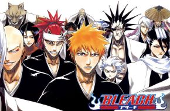

La obra narra la historia de un ninja huérfano adolescente llamado Naruto Uzumaki, cuyos padres
murieron en el ataque del Zorro Demonio de Nueve Colas, y quien aspira a convertirse en Hokage

Bleach
Acción-Comedia-Shounen-Sobrenatural-Superpoderes
La serie narra las aventuras de Ichigo Kurosaki, un joven adolescente de quince años de edad que
accidentalmente absorbe los poderes de una shinigami
Su trama describe las aventuras de Gokū, un guerrero saiyajin, experto en artes marciales que en su
infancia inicia sus viajes y aventuras en las que pone a prueba y mejora sus habilidades de pelea
Black Clover
Acción-Comedia-Fantasía-Magia-Shounen
La historia gira en torno de un joven llamado Asta, nacido sin poder mágico, algo desconocido en el
mundo en el que vive.
Shingeki no Kyojin
Acción-Drama-Militar-Shounen
La historia se desarrolla en un mundo ficticio en el que la humanidad está al borde de la extinción a
causa de unas criaturas humanoides llamadas «titanes», lo que obliga a los supervivientes a
refugiarse en tres enormes murallas que impiden el acceso a dichos monstruos.
Arifureta Shokugyou de Sekai Saikyou
Acción- Aventuras-Fantasía-Harem
La serie sigue a Hajime Nagumo, quien es transportado a otro mundo con el resto de su clase, pero
recibe solo las habilidades mágicas más promedio